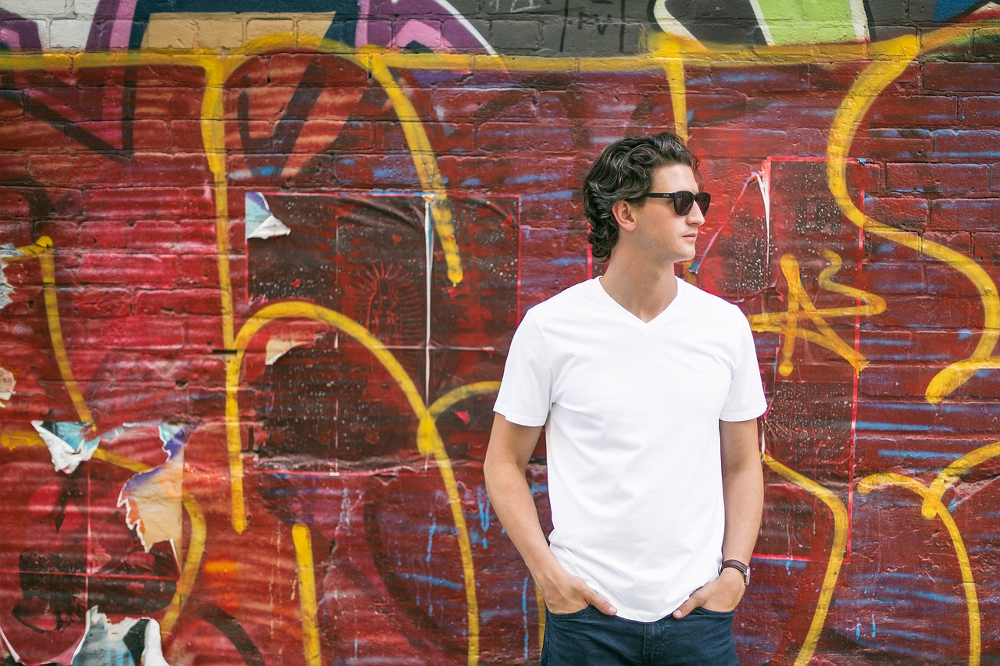

Mayhem Kitchen was opened in 2012 by owner, Arthur Gray. Arthur was born and raised in Maple Shade New Jersey and wanted to share his passion with his hometown. Mayhem Kitchen serves American style entrees and appetizers. What's unique about Mayhem Kitchen is that the menu may appear small and limited, but rotates and changes every 2 or so weeks to keep it fresh for new and returning customers.
